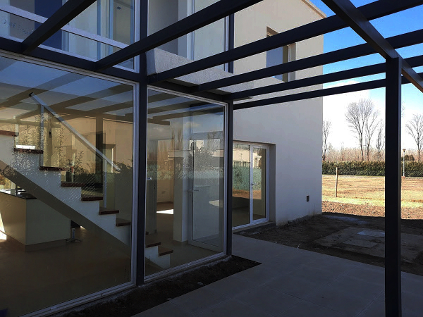
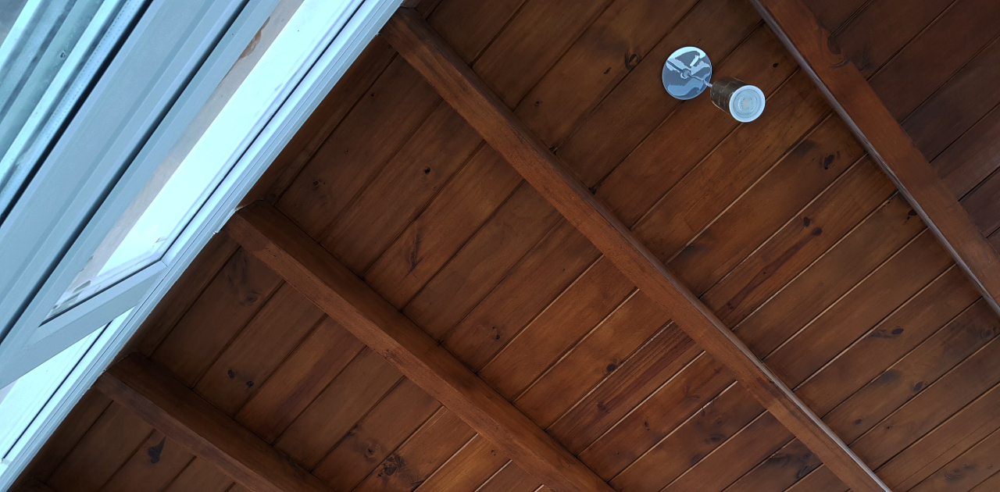

Antes que nada: qué hacemos
GJ Constructora diseña y construye. Nuestro encargo habitual es la obra completa: proyectamos la vivienda, el dúplex o la clínica y la ejecutamos hasta la entrega de llaves. La dirección de obra que se describe en esta página está incluida en ese trabajo; no es un servicio que vendamos suelto de forma habitual.
Explicamos acá en qué consiste porque es la parte del trabajo que menos se ve y la que más define el resultado. Cuando el proyecto y la ejecución están en la misma empresa, el control deja de ser una discusión entre partes y pasa a ser un procedimiento interno: quien verifica es el mismo que responde por lo construido.
Qué hace realmente un director de obra
Hay una confusión frecuente que cuesta cara: creer que quien dibujó los planos y quien construye alcanzan para que la obra salga bien. Falta un tercer rol, y es el que más se resigna cuando se busca ahorrar.
La dirección de obra es la función técnica que verifica que lo ejecutado coincida con lo proyectado, que los materiales sean los especificados y no equivalentes más baratos, que las etapas se aprueben antes de taparse, y que los avances que se certifican y se pagan sean los avances que efectivamente existen.
Es, en los hechos, la única figura en la obra cuyo interés está alineado con el tuyo. El proyectista ya cobró. El ejecutor cobra por avanzar. El director cobra por controlar. Cuando esa función no existe o la ejerce la misma empresa que construye sin ningún tipo de registro, el control desaparece y aparece la discusión.
Lo que se tapa no se vuelve a ver
En una obra hay decenas de momentos irreversibles. La armadura de una fundación antes del hormigonado. Las cañerías embutidas antes del revoque. La aislación de la cubierta antes de la terminación. El aislante hidrófugo de un muro antes del revestimiento.
Cada uno de esos momentos es una oportunidad de verificar que dura horas, y después se cierra. Un error en la armadura detectado antes de hormigonar se corrige en una mañana. El mismo error detectado dos años después, cuando aparece la fisura, implica demoler.
La dirección de obra existe para estar en esos momentos. No para pasar todos los días a mirar cómo levantan paredes, sino para estar presente cuando se toma una decisión que después no se puede revisar sin romper.

Qué controlamos
Replanteo
Verificación de niveles, ejes y retiros contra el proyecto y contra el plano de mensura.
Estructura
Control de armaduras, encofrados y calidad del hormigón antes de cada colado.
Instalaciones
Verificación de sanitarias, eléctricas y gas antes de que se embutan y se tapen.
Aislaciones
Control de hidrófugos, aislación térmica y resolución de puentes térmicos.
Certificación
Medición del avance real antes de autorizar cada pago. Se paga lo que está hecho.
Registro
Documentación fotográfica y de actuaciones, para que las decisiones queden asentadas.
Si ya tenés un proyecto hecho
Lo evaluamos sin cargo. Si está bien resuelto, lo construimos tal cual está. Si encontramos algo que va a traer problemas —instalaciones sin coordinar, una decisión estructural cara de ejecutar, un programa que no entra bien en el lote— te lo decimos antes de presupuestar, no en la mitad de la obra.
No es el punto de partida ideal. Un proyecto pensado sin quien lo va a construir suele arrastrar decisiones que después se pagan en tiempo y en dinero. Pero es una vía perfectamente posible y la trabajamos seguido.
Lo que no hacemos habitualmente es limitarnos a mirar mientras otro construye. Tomamos solo la dirección técnica en dos situaciones puntuales: cuando una obra ya está en marcha con otra empresa y el dueño necesita control independiente, y cuando una obra se complicó y hace falta un diagnóstico del estado real antes de decidir cómo seguir. En ambos casos el primer trabajo es un relevamiento, y no siempre son noticias cómodas.

Nuestro punto de partida
Dirigimos obras en el Alto Valle desde 1992, incluyendo obra pública hospitalaria, donde los estándares de control y de documentación son considerablemente más exigentes que en vivienda privada.
Ese estándar es el que aplicamos también cuando la obra es una casa. No porque haga falta la misma burocracia, sino porque el criterio de verificar antes de tapar es el mismo, cambie o no el tamaño de la obra.
Si querés que la misma empresa se haga cargo del proyecto, la dirección y la ejecución —que es como trabajamos habitualmente— eso está en Ejecución integral. Y si preferís comprar una unidad ya proyectada por nosotros, están en Oportunidades.
Señales de que tu obra necesita dirección técnica ya
Si estás construyendo sin dirección y aparece alguna de estas situaciones, conviene incorporarla antes de seguir avanzando.
Te piden pagos que no coinciden con lo que ves. El avance físico y el avance certificado se despegaron y no tenés cómo medirlo.
Aparecieron adicionales sin explicación técnica. Todo adicional legítimo tiene una causa que se puede explicar y documentar. Si la explicación es solo que subió el material, falta información.
Se cambiaron materiales sin avisarte. Sustituir un especificado por un equivalente puede ser razonable, pero es una decisión técnica que tiene que quedar registrada.
Hay fisuras, humedades o desniveles y nadie se hace cargo. Sin un registro de ejecución es muy difícil determinar el origen, y esa ambigüedad siempre juega en contra del dueño.
La obra se frenó y no sabés en qué estado quedó. Antes de contratar a alguien para continuarla hace falta un relevamiento del estado real.
Cómo se contrata
La dirección de obra se contrata por obra, con un alcance definido: qué etapas se verifican, con qué frecuencia se visita, qué se documenta y cómo se certifican los avances. Ese alcance se escribe antes de empezar.
Si la obra ya está en marcha, el primer paso es siempre un relevamiento del estado actual. No tiene sentido asumir la responsabilidad técnica de una ejecución sin saber qué se hizo antes y cómo.
Para conversarlo, escribinos por WhatsApp al 299 408-7407 o a gjconstructora92@gmail.com.